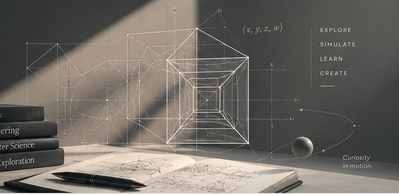

Independent software & engineering studio
Ideas into
useful software.
We turn curiosity and practical problems into applications, interactive experiences and learning tools that make complex ideas easier to explore, understand and use.

Our Projects
View all products →
Space Daily
Available onlineDaily NASA news, imagery, discoveries and guided learning.

Space Game
In developmentAn interactive introduction to spacecraft engineering.

Meal Planner
In developmentSimple planning for meals, nutrition and weekly shopping.

Pomodoro
BetaA gentle focus timer designed to make work feel calmer.

The Learning Workshop
Available onlineLearning resources for curious and practical minds.

Semi & AI Radar
Available onlineA clearer view of semiconductors and artificial intelligence.

Dan’s Toolbox
Available onlineA collection of useful tools and calculators.

Writing Lab
In developmentA writing companion built around your own words.
Different ideas.
A common purpose.
From everyday tools that make routines simpler to simulations that reveal how things work, Tesseratrix brings engineering thinking and creative problem-solving into digital products. Our projects cross disciplines and share a focus on clarity, accessibility and practical value. Discover our approach →